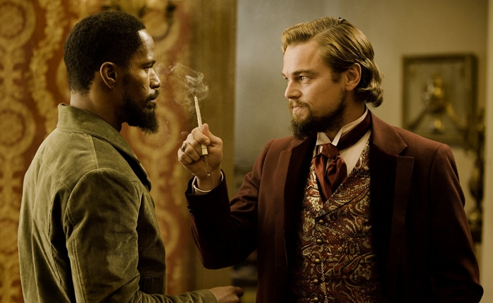

США, драма, вестерн, приключения, комедия, 2012

Справедливости ради стоит отметить, что в том же году Лео претендовал на Глобус в серьезной категории.
В долгожданном вестерне Квентина Тарантино "Джанго освобожденный" Лео мастерски сыграл роль одиозного злодея. Его Келвин Кэнди – эксцентричный рабовладелец, обожающий бои чернокожих и не считающий их за равных себе людей. Именно к нему в поместье скоро пожалуют загадочный доктор Шульц и его темнокожий спутник, преследующие собственные цели.
Рейтинг: IMDb 8.4, Кинопоиск 8.2